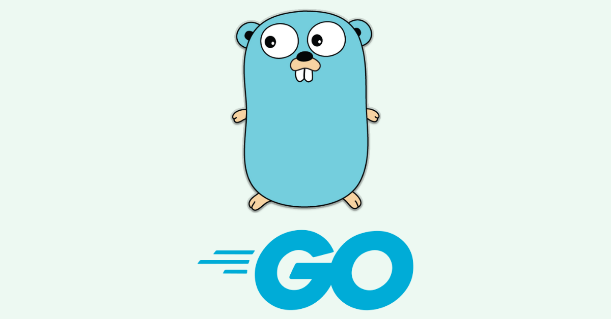

java es un lenguaje de programación versátil y orientado a objetos. Es conocido por su portabilidad, lo que significa que el código escrito en Java puede ejecutarse en diferentes plataformas sin necesidad de modificaciones. Es ampliamente utilizado en el desarrollo de aplicaciones empresariales, aplicaciones móviles (Android), y sistemas embebidos..
Python
Python es un lenguaje de programación interpretado, de alto nivel y fácil de aprender. Es apreciado por su sintaxis clara y legible, lo que lo convierte en una opción popular para principiantes. Python se utiliza en una variedad de aplicaciones, desde desarrollo web y análisis de datos hasta inteligencia artificial y desarrollo de juegos.
javascript
javaScript es un lenguaje de programación del lado del cliente que se utiliza principalmente para mejorar la interactividad en páginas web. Junto con HTML y CSS, forma parte fundamental del desarrollo web. Además de ser utilizado en el navegador, JavaScript también se usa en el lado del servidor (Node.js) para construir aplicaciones escalables.
c#
C# (pronunciado "C sharp") es un lenguaje de programación desarrollado por Microsoft. Es especialmente conocido por su uso en el desarrollo de aplicaciones de escritorio con el framework .NET. C# también se utiliza en el desarrollo de aplicaciones web, servicios web y juegos a través de la plataforma Unity.
c++
C++ es una extensión del lenguaje de programación C y es conocido por su alto rendimiento y flexibilidad. Se utiliza en el desarrollo de software de sistemas, aplicaciones de escritorio, juegos, controladores de hardware y software embebido. C++ es una elección común para aplicaciones que requieren un rendimiento cercano al hardware.
php
PHP es un lenguaje de script del lado del servidor diseñado para el desarrollo web. Es ampliamente utilizado para crear sitios web dinámicos y aplicaciones web. PHP se ejecuta en el servidor y se integra fácilmente con HTML. Es conocido por su capacidad para interactuar con bases de datos, como MySQL, para gestionar la información del sitio web.
GO

Go, o Golang, es un lenguaje de programación desarrollado por Google. Se destaca por su simplicidad y eficiencia en el desarrollo de software a gran escala. Go es particularmente adecuado para el desarrollo de servidores, herramientas de línea de comandos y sistemas distribuidos.
Ruby
Ruby es un lenguaje de programación dinámico y de alto nivel. Es apreciado por su elegancia y simplicidad. Ruby on Rails, un marco de desarrollo web construido con Ruby, es conocido por su enfoque en la convención sobre la configuración, lo que acelera el desarrollo de aplicaciones web.
typescript
TypeScript es un superset de JavaScript que agrega tipado estático al lenguaje. Está diseñado para facilitar el desarrollo de aplicaciones más grandes y mantenibles. TypeScript se compila a JavaScript estándar y se utiliza comúnmente en proyectos grandes, especialmente con frameworks como Angular.